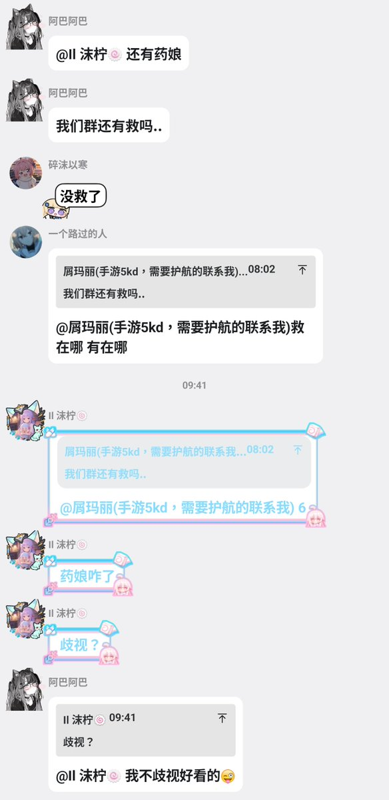
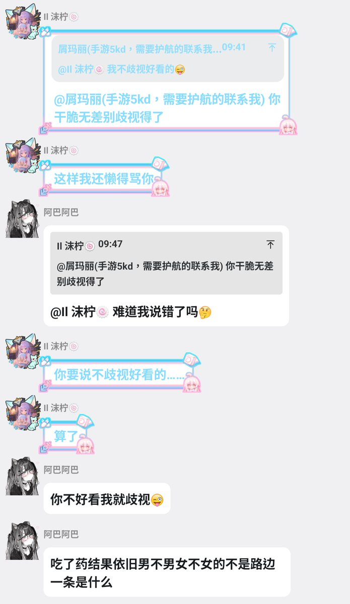

你但凡无差别歧视，我看一眼都懒得搭理，偏偏还要郑重其事地宣布“我不歧视好看的”，仿佛这是什么值得炫耀的高尚原则。拜托……你这不是给自己洗白，是生怕别人没发现你的逻辑有多烂，亲手把“双标”两个字裱起来挂自己脑门上。觉得谁好看谁难看是审美自由，但因为别人不符合你的审美，就觉得别人低你一等，甚至配不上最基本的尊重，那暴露的不是别人长得怎么样，而是你贫瘠到只能靠踩别人来制造优越感。你的傲慢和优越感是哪来的？别人长什么样至少不是为了通过你的审核，你像个质检员一样拿着一套只有自己承认的颜值标准到处给人盖合格章给谁做样子呢，还是在满足自己的虚荣心？真把自己的审美当成重要的评判标准了？你说“好看的我不歧视”这句话证明你非常清楚自己有能力不歧视别人，只不过你觉得“不好看的人”不配得到这种待遇而已。那就别拿什么观点和原则当遮羞布了，你所谓的原则总结起来就是符合你审美的就是人，不符合的你就可以随便羞辱。审美有门槛很正常，做人也给基本尊重设颜值门槛，就只剩难看了，至于到底是哪难看，我说的显然不是你的脸好吧

